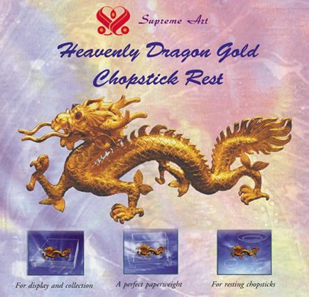

|
Le porte-baguettes en or de la série du Dragon Céleste
Pour une exposition ou une collection
Un presse-papier idéal
Pour poser des baguettes

Une nouvelle pièce s'ajoute à la magnifique et splendide vaisselle en or de la série de Dragon Céleste créée par Maître Suprême Ching Hai : le porte-baguette Sen or de la série du Dragon Céleste.
Cette pièce est magnifiquement fabriquée en or 22 carats et comporte des incrustations de rubis chatoyants. Elle représente la splendeur de l'univers, la magnificence du paradis, la créativité de l'art classique, et la richesse du monde humain. Ce porte-baguette fonctionnel peut également servir comme presse-papier idéal, et constitue un article parfait pour une collection ou une exposition. C'est un précieux chef-d'oeuvre de notre époque et un choix de grande valeur si l'on souhaite l'inclure dans la collection héritée de sa famille ; chef-d'oeuvre que doivent chérir aussi bien les générations présentes que futures.
|
|